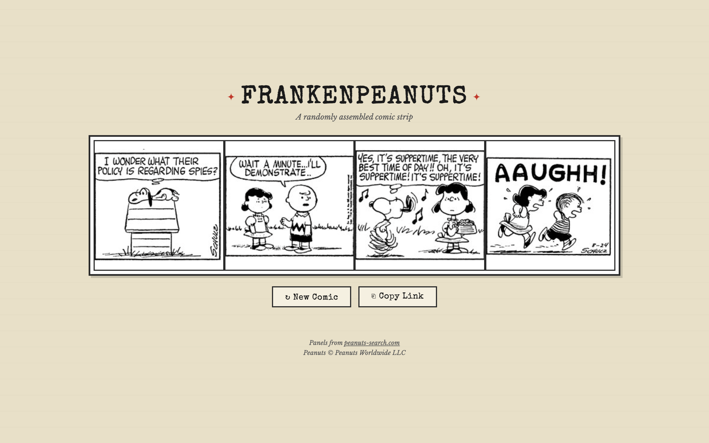

Peanuts ran daily from October 2, 1950 to February 13, 2000. That's nearly 18,000 strips, each drawn by Charles Schulz alone. FrankenPeanuts picks four strips at random from that archive, extracts one panel from each, and stitches them into a new four-panel comic. The results range from accidentally poetic to completely incoherent. Every reload is a new strip.

Panel detection
The hardest part of this project isn't combining panels. It's figuring out where the panels are. A Peanuts daily strip is a single image with panels separated by thin vertical gutters. There's no metadata telling you where each panel starts and ends. You have to look at the pixels.
The approach here avoids any heavy computer vision library. Instead, it scans each column of pixels and counts how many are dark. Gutter columns (the gaps between panels) are almost entirely dark lines on a white background, so they produce a distinctive spike in the dark-pixel count. By finding these spikes, the code identifies the gutter positions and splits the strip into individual panels.
Not every panel is usable. Sunday strips have irregular layouts with panels of wildly different sizes. The code only fetches weekday strips to avoid this. Even among weekday strips, some panels are much wider or taller than others, which looks bad when you're stitching four panels into a uniform grid. A filter rejects panels whose aspect ratio falls outside the range of 0.55 to 1.45, keeping only roughly square panels. If a strip doesn't yield any usable panels (which happens maybe 10% of the time), the code retries with a different random date, up to eight times.
How it runs
Strip images come from peanuts-search.com. The app runs entirely in the browser using the HTML5 Canvas API for pixel-level image analysis. A CORS proxy handles the cross-origin restrictions on fetching images from an external domain, which is the usual annoyance of client-side image processing.
The whole thing is a single HTML file. No build step, no dependencies. Load it in a browser and it works.
Sharing
Each generated strip is encoded in the URL hash as a set of dates and panel indices. Clicking "Copy Link" gives you a URL that, when opened, reconstructs exactly the same four-panel comic. This is nicer than taking a screenshot because the panels render at full resolution on any device. It also means you can bookmark a particularly good combination and it will always work, as long as the source images stay online.
The four-panel grid is responsive: four columns on desktop, two on mobile. Hovering over a panel shows the original publication date, which is a fun way to see how far apart the source strips are. Sometimes you get panels from 1952 and 1998 side by side, and the art style difference is its own kind of comedy.